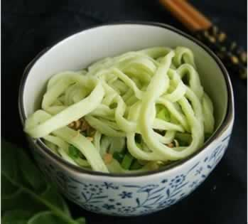

孕晚期便秘的饮食小对策
准妈妈在孕晚期容易发生便秘，这是因为肠道肌肉被下降的胎头挤压得无力活动，因此常常出现肠胀气，并引起排便不畅和便秘。为防治便秘，建议准妈妈可以在饮食上加以调整，如下：
1、多饮水，多吃富含粗纤维的瓜果和绿叶梗茎蔬菜，如香蕉、苹果、梨、葡萄、菠菜、苋菜、黄瓜和海带等。
2、每天早上起床，先喝一杯凉开水，再吃早餐，这样可加强起床的直立反射和胃肠反射，促进排便及养成良好的每日定时排便的习惯；当有排便感时，就要去厕所。
3、适当喝些蜂蜜水，吃些香油及黑芝麻，可以帮助通便。千万不可轻易用泻药，以防引发早产。
4、用手轻轻转圈摩擦腹部，这是有利肠蠕动的腹部按摩，推动粪便下行。
5、避免久站、久坐，适当散步，有利于预防便秘。
6、选择含脂肪酸较多的食物。如各种坚果和植物种子，如杏仁、核桃、腰果仁、各种瓜籽仁、芝麻等;脂肪多的鱼。
7、选择含有机酸的食物。如牛奶、酸奶、乳酸饮料、柑橘类、苹果等。
8、三餐饮食正常。特别是早餐一定要吃，避免空腹，并多吃含纤维素多的食物，比如糙米、麦芽、全麦面包、牛奶，还有新鲜蔬菜、新鲜水果。
此外，充足睡眠，适量活动，也有利于增强胃肠蠕动；心情愉快、精神压力得到缓解等也都是减轻便秘的好方法。
本周推荐尝试食谱1：
玉米排骨粥推荐理由：玉米中粗纤维较多，可消除孕期便秘，与营养丰富的排骨一起熬粥，可以促进胎儿的大脑发育。
食谱原料：
玉米粒10克，猪排骨20克，米粥1碗
制作方法：
1、 玉米粒洗净，剁碎，排骨洗净，剁成小块；
2、 锅内加水，大火煮沸，放入玉米碎，排骨块，小火熬烂，加入米粥熬煮片刻即可。
本周推荐尝试食谱2：
手擀面
推荐理由：蔬菜面味道鲜美，易于消化，蛋白质和维生素A含量高，且营养均衡，适合孕妇食用。
食谱原料：
菠菜汁100ml，胡萝卜汁100ml，面粉400g。
制作方法：
1、菠菜汁与胡萝卜汁，分别加180g面粉揉匀成团，放入保鲜袋中醒20分钟，拿出来再揉一下，这样反复2-3次。
2、反复几次，在醒面20分钟以后，先取其中一块面，用比较长的擀面杖擀成很薄的面皮，约不到2mm，折叠，擀面时不停的撒些干粉以防止粘连。折叠前也要撒干粉。
3、切自己喜欢的宽度，切好后撒干粉，或者撒比较细的玉米面（非玉米淀粉），使面条均匀的沾上面粉止粘连。若直接吃，下锅煮即可。若当时吃不完，可分成需要的分量，放保鲜袋中直接冷冻。
4、另一块面团同样操作。煮好后的面，可以加自己喜欢的料做成汤面，干拌面，过凉开水成凉拌面。